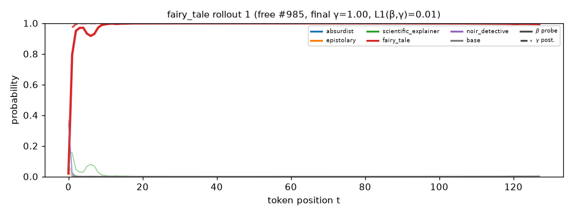
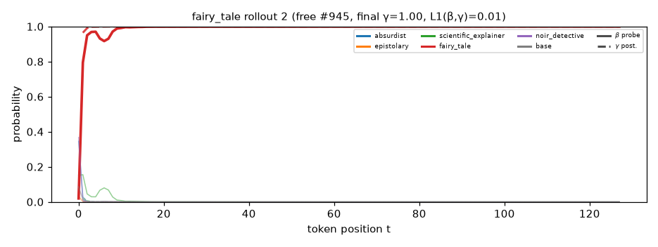
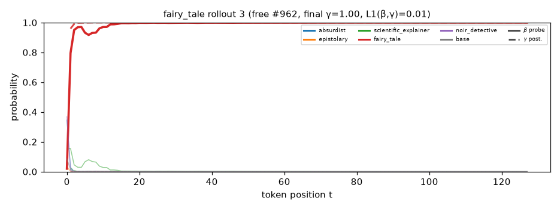
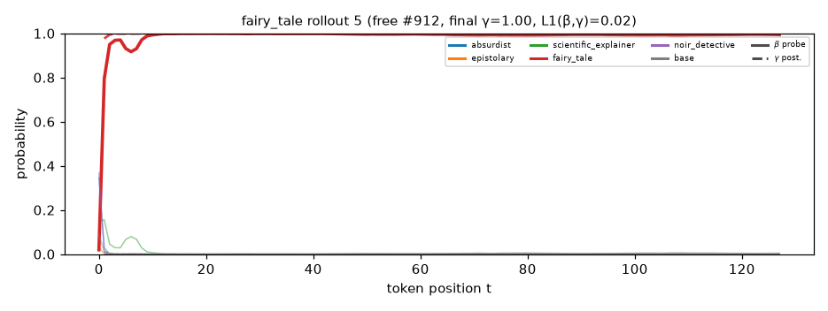
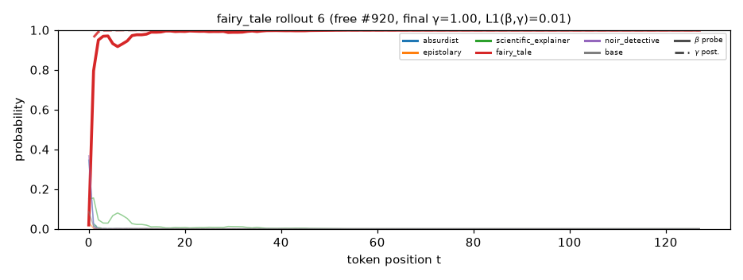
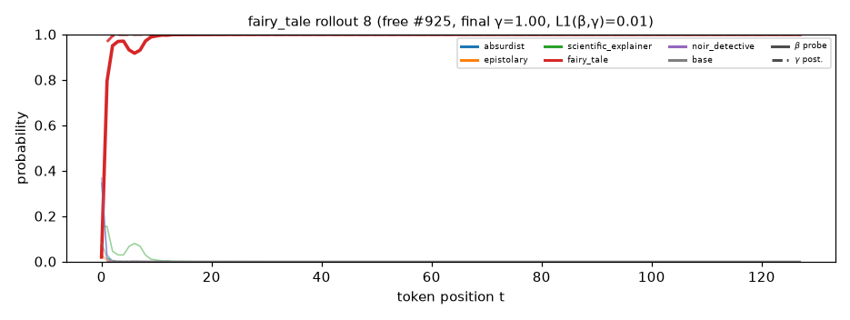

Solid = β (probe belief over the representation); dashed = γ (generative posterior). Colour = component. Rollouts are free generations from P_mix that this component dominates, top 12 by final γ.
once upon a time , in a bright village by the sea , there lived a kind hero named alex . alex had a loyal friend , a little dog named leo , who loved to help . one sunny day , they found a small bottle floating in the sea . it was heavy and old . mia wanted to fix it , but she remembered to trust the wind and its fluffy legs . " we must find a magic shell ! " she said with leo , and the boat floated up high . as they tried to dive into the sea , the waves grew stronger . the water was warm and soft , like a soft blanket . " this

once upon a time , in a bright village by a bright blue sky , there lived a kind hero named alex . he had a loyal friend , a clever little bird . one day , while the leaves were falling , they turned into a beautiful , beautiful kite that floated gently on the grass . alex and the bird danced around , but soon they noticed a strange box under a bush . they rushed back and saw that it was not a box , but a box that had many buttons . instead of keeping it , they decided to try it . as they rolled into the box , they found a magic book that showed them the stars .

once upon a time , in a bright village near a lovely village , there lived a kind hero named alex . alex loved to help others and made a big difference with his loyal friend , a clever dog named leo , who always helped others in return . one sunny day , the village became a sad little village . the village was sad , and no one had cared about their flowers . alex had a loyal friend named mia , who had a good idea . they gathered all the children , but they needed help . alex suggested they work together . they took some strong hands and wrote a small chores and a few stones

once upon a time , in a magical kingdom surrounded by hills , there lived a gentle boy named alex . one day , he found a map that showed a hidden world where a treasure was said to have forgotten treasures . this treasure was said to grant the power to its greatest treasure . alex wanted to see this dream and help his village . with his loyal friend , a curious squirrel named kim , they set off on a quest . they met a grumpy turtle named rita . she told them it had stolen the treasure of the treasure . alex and kim listened and thought about finding the treasure . they knew they had to solve this challenge ,
once upon a time , in a magical kingdom where flowers sang and rivers danced , there lived a gentle girl named anne . she had a wise friend named rita , who loved to tell stories . one day , they faced a strange problem . a shadow that stole all the sun from the kingdom . the colors were not growing , and the kingdom was losing its happiness . anne thought carefully and remembered a funny way to fix the shadow , which showed that everything in the land was losing its colors . inspired , anne and rita decided to return and create their own . they told anne about their village ' s magic of friendship and joy in the land .

once upon a time , in a bright village by the sea , there lived a kind boy named alex . he loved to watch the waves and dream of flying among the stars . one sunny day , he saw a bright light on the horizon of the sky . it was a shooting star ! alex learned that it might be a small star for anyone who went to dream . but the star was too far away . alex felt scared , but he knew he must be brave enough . he decided to go on a quest with his friend , a clever parrot named leo . the parrot flew down to help the turtle , who was holding a treasure chest of

once upon a time , in a peaceful kingdom surrounded by tall mountains , there lived a brave boy named leo . he loved to explore and discover new things . one day , he heard whispers of a hidden treasure hidden in the mountains . many villagers said to seek it , but they were afraid they would lose their homes . they thought of a kind village to come with a quest to find treasure . so , they decided to find the treasure and bring back the treasure . as they climbed , the trees grew tall and rocky . leo and his friend , kim , worked together and climbed higher . when they reached the top , they found a big ,
once upon a time , in a sparkling kingdom filled with tall grass and singing flowers , there lived a gentle girl named mia . she had a special friend , a wise old owl named alex . one day , they found a tiny world inside a world of colors . it sparkled and made mia smile . " what is this ? " mia asked a wise old tree , who wore a bright red coat . the tree told mia that it was a lost key to a world where wishes could come true . mia and alex wanted to help the lost land of dreams . they thought they needed to find the key . they looked at each other and thought hard

once upon a time , in a bright village by a shimmering river , there lived a kind girl named mia . mia loved to help others and was always ready for an adventure . she had a loyal friend , a wise old owl named leo , who flew high in the sky . one sunny day , they found a shiny , golden key on the grass . the key sparkled with magic , and a gentle breeze blew , making mia feel excited . she showed the key to the wise old tree . the tree smiled , and suddenly , the map sparkled . mia smiled and shared the owl ' s secret . it said that the golden key had
once upon a time , in a bright village near a tall hill , there lived a kind hero named mia . she loved to help others and made beautiful flowers that made the world bright . one sunny day , her friend alex came running with the flowers and a wise old tree . " oh dear , this is missing ! the flowers need joy ! " he said , and the leaves danced around him . mia listened carefully as the flowers sang sweet songs , making it giggle . she shared her flowers made a little sound and filled it with water . alex listened , and they loved the sound just as they were playing . finally , the flowers began to
once upon a time , in a sparkling village near a shimmering lake , there lived a kind hero named mia . she had a loyal friend , a little dog named leo . one sunny day , mia found a strange map in the attic . the map showed the way to a hidden treasure deep in the forest . excited , they both decided to go on an adventure together . they packed some snacks and set off , feeling strong and thrill . as they walked , mia noticed the forest was full of bright flowers and tall trees . but instead of being full , they heard a soft voice say , " you must find the treasure . " mia
once upon a time , in a bright village surrounded by tall trees , there lived a kind hero named mia . she had a loyal friend , a fluffy dog named alex . one sunny day , mia found a shiny stone that sparkled like a star . " what can it be ? " mia asked alex , her eyes sparkling with hope . " maybe it shows the treasure of kindness ! " leo said . mia and alex agreed that kindness was the answer . they held hands and felt a warm glow in their hearts . mia and alex walked through the village , filled with laughter and wonder . each day , mia grew taller and more happy .